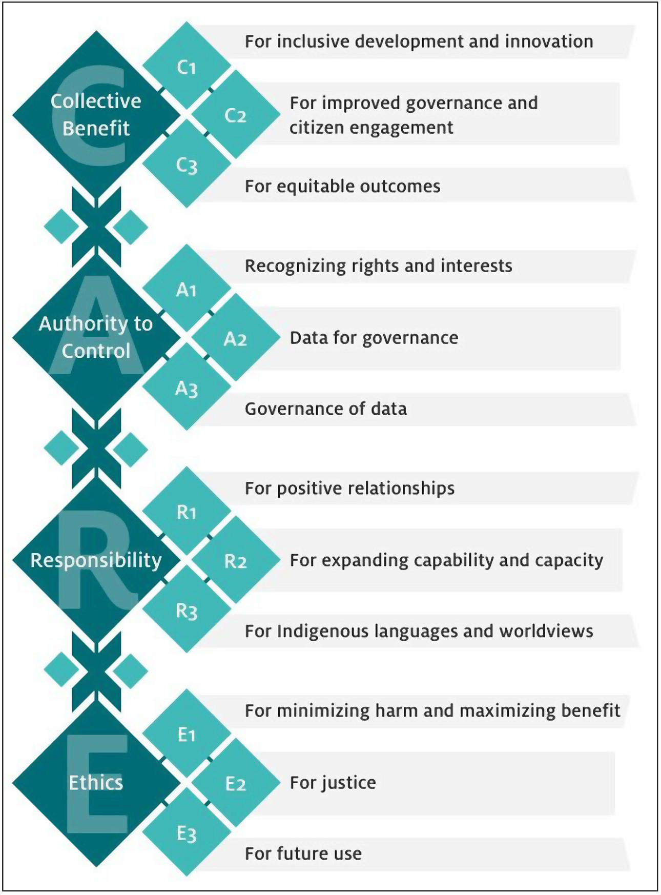

2 CARE and FAIR principles
CARE and FAIR are principles that specify different but complimentary ethical considerations for the collection, management, use, and governance of data (Carroll et al. 2021). The concepts underlying CARE articulate ideas of Indigenous data sovereignty and governance that have deep historical roots (UN General Assembly 2007; Kukutai & Taylor 2016; Carroll et al. 2020; Carroll et al. 2021). The concepts in FAIR relate to the more recent idea of open and reproducible science. We will discuss FAIR first, though it is not the chronologically earlier concept nor more important, because the current articulation of CARE contends with the fact that FAIR is the emerging default for data (Carroll et al. 2021).

2.1 FAIR
FAIR (Wilkinson et al. 2016) stands for Findable, Accessible, Interpretable, and Reusable. We’ll go through what each of those mean in practice and then briefly discuss the underlying ethics.
2.1.1 Findable
This means data and metadata should be easy to find by both humans and computers. Data should have persistent identifiers such as a digital object identifier (DOI) and have sufficient structured information such that it is searchable. As an example, the Global Biodiversity Information Facility (GBIF) houses species occurrence data (think museum and herbarium specimens) and assigns DOIs to every submitted data set and every user download. That downloads have a DOI means that research using those downloaded data can reference the DOI, making the exact data underpinning the research finable. GBIF also enables searching for data by different criteria including taxonomy and geographic location.
2.1.2 Accessible
This means that once found, data and metadata should be retrievable by both humans and computers. Importantly, accessible in this context means metadata are always accessible, even if raw data cannot be accessed (e.g. for ethical reasons). The method for downloading or requesting access to (meta)data should be clear and not require specialized or proprietary tools but rather standardized, open (as in open source) protocols. For example. GBIF allows humans to select data for download through a web interface and complete the download through standard HTTP protocols. GBIF also serves an application programming interface (API) which allows data to be downloaded through automated computer workflows. Other examples of repositories with accessible data are Dryad Digital Repository and Zenodo, two resources we retrieved data from for this class.
2.1.3 Interoperable
Data and metadata should use broadly applicable, formal data standards that are themselves FAIR. It should use standardized formats that allow data to be integrated with other data sets and used with various applications. As an example, GBIF uses the Darwin Core standard which provides a shared vocabulary for occurrence-based biodiversity (meta)data, with terms like scientificName, decimalLatitude, and eventDate. These terms can be thought of as standard column names that all data should have in order to meet the Darwin Core standard. All other data that use Darwin Core, or another standard that can be transliterated to Darwin Core, can now interoperate.
2.1.4 Reusable
To be refundable data must be well-described with accurate metadata, including provenance, and have clear licensing that allows for reuse. In this context provenance is taken to mean the researchers who generated the data and how they generated it. In our discussion of CARE, provenance will take on a much deeper and more accurate meaning. The Darwin Core standard enables metadata to meet the reusability standard as long as the specific licence allows reuse. GBIF, for example, requires data to be licensed under a Creative Commons license. Another metadata standard worth noting is the Ecological Metadata Language which provides additional ways of describing data that do not neatly fit within the occurrence-type data most easily described by Darwin Core.
2.1.5 Ethics of FAIR
Global and local disparities in science funding access (Ma et al. 2015; Petersen 2021; Chen et al. 2022; Nguyen et al. 2023; Larregue & Nielsen 2024) means that a small proportion of researchers have dominated the means of producing data. If data were not FAIR, researchers without access to the same funding would be further disadvantaged and their contributions to science would be further lost. FAIR also came to the scientific forefront in response to the replication crisis (Nosek et al. 2015; Wilkinson et al. 2016). It is hoped that making data open and reusable will make science more transparent and reproducible (Parker et al. 2016; Filazzola & Cahill Jr 2021). Greater transiency and reproducibility should make science less prone to the analytical errors and biases that led to the replication crisis, as well as make the scientific record quicker and easier to correct when errors do occur. Most scientific data is also publicly funded and therefore there are ethical considerations for making data broadly accessible by everyone, public included, and reusable to ensure the highest scientific return on the investment from the public (Stebbins 2013; Maglia 2015).
2.2 CARE
While ethics are implied in FAIR, CARE intentionally addresses them head-on in the context of Indigenous peoples’ rights (UN General Assembly 2007; Carroll et al. 2020; Carroll et al. 2021). CARE is an articulation of Indigenous data sovereignty (IDSov) and Indigenous data governance (IDGov). IDSov and IDGov apply to Indigenous data. Indigenous data are any form of data (including traditional knowledge, language, physical materials, digital records, and more) in any format that originate from or impact Indigenous peoples, people, communities, nations, territories (including traditional territories now occupied by settlers), and all their constituent pieces from natural “resources” to human bodies to cultural expression (Carroll et al. 2021).
Where data “originate from” is a way of saying what is the provenance of the data. We saw provenance when discussing the necessity of clearly describing data under FAIR. From a colonial perspective the provenance of data sits with the researcher extracting data. But a de-colonial perspective reveals that the provenance sits with the original knowledge holders and/or stewards of the sources (e.g. lands and waters) of knowledge. The provenance of an academic recording of ʻōlelo Hawaiʻi spoken by a mānaleo does not sit with the academic but with the speaker and more broadly with Kānaka ʻŌiwi. The provenance of an entomological collection from the Waiʻanae Mountains on Oʻahu does not sit with the collector (whose name is likely attached to each specimen) but with the ʻāina, the lāhui Hawaiʻi, and Kānaka ʻŌiwi. The distinction about provenance is important because, under western intellectual property systems, provenance and ownership are assumed to be equivalent. Who “owns” the data governs the data. IDSov and IDGov work to recenter Indigenous worldviews, rights, self-determination, and wellbeing in data stewardship, rather than western notions of property.
We will start to build understanding of IDSov and IDGov by defining CARE. CARE (GIDA 2019; Carroll et al. 2020) stands for Collective benefit, Authority to control, Responsibility, and Ethics. We will dive deeper into each.
2.2.1 Collective benefit
Data inherently hold potential for innovation, value generation, and decision making. People, communities, and nations can benefit from data. The collective benefit principle stipulates that benefits should be shared collectively and specifically that data stewardship practices must enable Indigenous peoples and people to derive benefit from Indigenous data. Benefit is sometimes—in western worldviews—reflexively equated with monetary value, but benefit takes many forms including the benefit of using data to inform governance and decision making, and generally to promote wellbeing.
2.2.3 Responsibility
Those working with Indigenous data have a responsibility to engage with respect, reciprocity, and earned trust. Respect must be given to cultural protocols and rights to self-determination. Reciprocity is about ensuring that not only the benefits derived from data can advance Indigenous peoples’ wellbeing, but the process of data collection and stewardship have embedded practices of collaboration that expand the capacity (e.g. through increased data literacy) of Indigenous peoples and people to engage with data. Reciprocity and respect are also about seeking mutual understanding of worldviews and ensuring that data and their products are communicated in a way consistent with those worldviews, including in the Indigenous language of the people of provenance. Earned trust means those working with Indigenous data embrace the responsibility of collaborating with integrity and consistently support positive relationships.
2.2.4 Ethics
Ethics means centering the rights, wellbeing, and ethical frameworks of Indigenous Peoples in the stewardship of Indigenous data. To do so requires grappling with the ways colonialism and colonists create power imbalances, scarcities (real and constructed), and trauma. This work is not trivial, which also means ethics include honoring that work by ensuring the longevity of data and its potential to produce benefits into the future. Indicating Indigenous provenance is part of ensuring future ethical use.
2.3 CARE and FAIR together
Stephanie Carroll and colleagues (2021), leaders in IDSov and IDGov, point out that FAIR principles can support operationalizing CARE and vice versa. Indigenous data are all too often rendered hidden, inaccessible, not reusable, and not interoperable by colonial power imbalances and institutions (Carroll et al. 2021). Making such data FAIR is necessary in these cases to begin the process of implementing CARE. From personal experience (Andy speaking here) CARE can be perceived by some researchers in colonial institutions to curtail the implementation of FAIR, but this is misguided. As pointed out in the articulation of CARE (GIDA 2019), Indigenous data cannot be used in good conscience without “relationships built on respect, reciprocity, trust, and mutual understanding, as defined by the Indigenous Peoples to whom those data relate” (quoting from GIDA (2019)). Thus without CARE, the R (reusable) in FAIR is invalid. Operationalizing CARE results in richer, more complete metadata, and complete metadata underpin all aspects of FAIR.
Perceived conflicts between FAIR and CARE might be resolved by asking “FAIR for whom?” and “who gets to decide?” Who gets to decide which protocols are implemented to access and reuse data? Who can find the data (i.e. findable for whom)? Who decided what metadata to expose to make data findable by which search terms? With whose worldview do those search terms align? Contemplating these questions might result in the conclusion that individuals or institutions that are asked to share power—power that previously was not shared—may perceive CARE to limit FAIR. But CARE does not limit FAIR. Rather, colonial power imbalances made data only FAIR for some, which is not actually fulfilling FAIR at all.
2.4 Implementing CARE with Local Contexts Labels and Notices
Metadata result from operationalizing CARE. Having metadata standards is one important aspect of FAIR. Local Contexts offers one emerging implementation of standard CARE metadata via their Labels and Notices (Local Contexts 2025a, 2025b). Labels are used by Indigenous communities and nations to articulate their rights to and interests in Indigenous data. Notices are used by researchers and colonial institutions to affirm the existence of Indigenous rights and interests and acknowledge that work is underway to articulate those rights and interests. Notices also indicate the readiness of researchers and colonial institutions to fulfill their responsibilities (the R in CARE) of centering Indigenous worldviews, self-determination, wellbeing, and rights in data stewardship.
For metadata to be useful they need to be FAIR. To make Local Contexts Labels and Notices FAIR they are hosted on the Local Contexts Hub, an online repository. To work with these metadata, communities, researchers, and colonial institutions must first make an account on the Hub (free for communities and researchers, paid on a subscription basis for institutions). Local Contexts Hub is structured by projects. Labels and Notices are applied to data by connecting both to a project. Projects have permanent unique identifiers and persistent URLs based on those identifiers, replicating the permanence of DOIs.
To understand this better we will walk through the a Local Contexts workflow from the perspective of a researcher initiated the process, because “researcher” is likely the common aspect of identity shared by those participating in this course.
2.4.1 A researcher applies Notices and notifies communities
The Local Contexts Hub workflow for a researcher should ideally begin with co-production of research goals and data management with local communities in real life outside of the Hub. For archival data already collected (the majority of data) this likely did not occur. Within the Hub a researcher creates a project to correspond to Indigenous data they are working with. The Hub does not house the data itself, only the metadata. Then Notices are applied to the project and communities are notified via the Hub. Again, ideally, researchers and communities will already be working together because even the act of defining what data are and the geographic or other bounds that delineate one data set (and thus one Hub project) from another can be surprisingly different across different ways of knowing. But projects can still be created and Notices applied in situations where co-production has not occurred (don’t let perfect be the enemy of good).
Notices, again, affirm the existence of Indigenous rights to and interests in specific data. A notice is three things: 1) a visual badge drawing the focus of a person engaging with Indigenous data; 2) human-readable text explaining the significance of the Notice; and 3) a machine-readable string that can be integrated into data processing and management workflows. There are multiple Notices each with unique purpose. We will focus on four that individual researchers are most likely to use.
2.4.1.1 Open to Collaborate

The Open to Collaborate Notice is an Engagement Notice that can be used to indicate a researcher’s or institution’s commitment to CARE principles and working collaboratively on issues of IDSov and IDGov. Engagement Notices are not applied to data, but rather are appropriate to display on, for example, research or institution websites. See full information here.
2.4.1.2 Attribution Incomplete

The Attribution Incomplete Notice is applied to data to indicate that attribution (including provenance and contributors) is incomplete, inaccurate, or missing. This notice indicates a work in progress toward correcting the mistake of incomplete attribution. See full information here.
2.4.1.3 Traditional Knowledge

The TK Notice indicates that data representing Traditional Knowledge and related terms/concepts (Traditional Ecological Knowledge, Indigenous Knowledge, Indigenous Science) carry Indigenous rights, protocols, and responsibilities. See full information here.
2.4.1.4 Biocultural

The BC Notice affirms the rights of Indigenous peoples to govern the stewardship of data generated from biological sources within their traditional lands, waters, and territories. See full information here.
Notices are not meant to be the permanent metadata associated with Indigenous data because the Notices do not themselves articulate the rights and protocols of Indigenous peoples. That is the job for Labels.
2.4.2 A community applies Labels
To re-iterate, this workflow is from a researcher’s perspective. Indigenous communities can also create projects connected to data without need for researchers external to their communities creating the project and applying Notices. We are using the researcher-initiated example here because we are all researchers, but not all of us may be Indigenous or authorized to speak for Indigenous communities.
In the researcher-initiated workflow, once a Notice(s) is applied to data via a project, an Indigenous community can then replace Notices with Labels. Unlike Notices, Labels do articulate the rights and protocols of Indigenous peoples. There are many different kinds of Labels
- not for researchers to apply
- here are some categories
- though not for researchers to apply, should all understand and be ready to act
2.4.3 What’s next?
- projects integrated with database holding data and journals
- users develop culture of respect and understanding of CARE metadata
2.5 References
Carroll S et al. 2020. The CARE principles for indigenous data governance. Data science journal 19. Ubiquity Press.
Carroll SR, Herczog E, Hudson M, Russell K, Stall S. 2021. Operationalizing the CARE and FAIR principles for indigenous data futures. Scientific data 8:108. Nature Publishing Group UK London.
Chen CY, Kahanamoku SS, Tripati A, Alegado RA, Morris VR, Andrade K, Hosbey J. 2022. Systemic racial disparities in funding rates at the national science foundation. Elife 11:e83071. eLife Sciences Publications, Ltd.
Filazzola A, Cahill Jr JF. 2021. Replication in field ecology: Identifying challenges and proposing solutions. Methods in Ecology and Evolution 12:1780–1792. Wiley Online Library.
GIDA. 2019. Research Data Alliance International Indigenous Data Sovereignty Interest Group. CARE Principles for Indigenous Data Governance. https://www.gida-global.org/care.
Kukutai T, Taylor J. 2016. Indigenous data sovereignty: Toward an agenda. ANU press.
Larregue J, Nielsen MW. 2024. Knowledge hierarchies and gender disparities in social science funding. Sociology 58:45–65. SAGE Publications Sage UK: London, England.
Local Contexts. 2025a. Local contexts labels. https://localcontexts.org/labels/about-the-labels/.
Local Contexts. 2025b. Local contexts notices. https://localcontexts.org/notices/about-the-notices/.
Ma A, Mondragón RJ, Latora V. 2015. Anatomy of funded research in science. Proceedings of the National Academy of Sciences 112:14760–14765. National Academy of Sciences.
Maglia A. 2015. NSF data management and public access initiatives.
Nguyen M, Gonzalez L, Chaudhry SI, Ahuja N, Pomahac B, Newman A, Cannon A, Zarebski SA, Dardik A, Boatright D. 2023. Gender disparity in national institutes of health funding among surgeon-scientists from 1995 to 2020. JAMA network open 6:e233630–e233630. American Medical Association.
Nosek BA et al. 2015. Promoting an open research culture. Science 348:1422–1425. American Association for the Advancement of Science.
Parker TH, Forstmeier W, Koricheva J, Fidler F, Hadfield JD, Chee YE, Kelly CD, Gurevitch J, Nakagawa S. 2016. Transparency in ecology and evolution: Real problems, real solutions. Trends in Ecology & Evolution 31:711–719. Elsevier.
Petersen OH. 2021. Inequality of research funding between different countries and regions is a serious problem for global science. Function 2:zqab060. Oxford University Press.
Stebbins M. 2013. Expanding public access to the results of federally funded research.
UN General Assembly. 2007. United nations declaration on the rights of indigenous peoples 12:1–18.
Wilkinson MD et al. 2016. The FAIR guiding principles for scientific data management and stewardship. Scientific data 3:1–9. Nature Publishing Group.